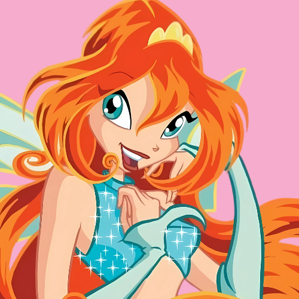
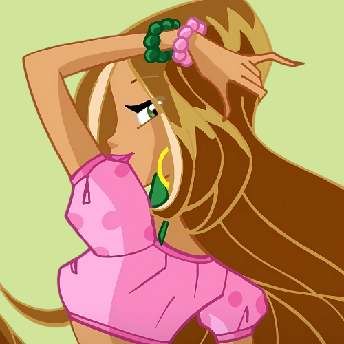

Selecione um personagem
-

- 
- 
Musa
Musa é a fada da música. Criativa e sensível, ela usa o som como forma de combate e defesa.
Musa é a fada da música. Criativa e sensível, ela usa o som como forma de combate e defesa.